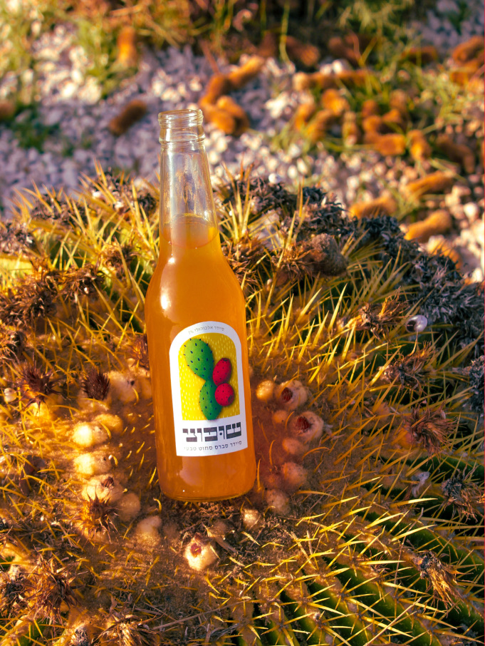
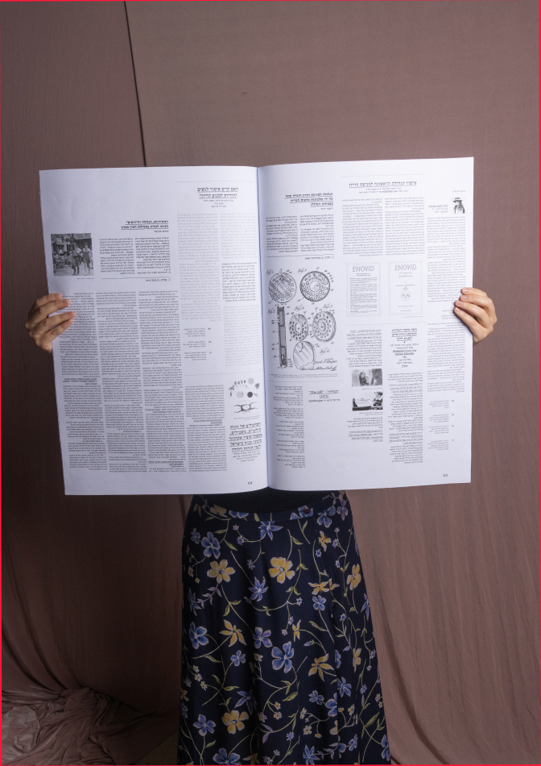
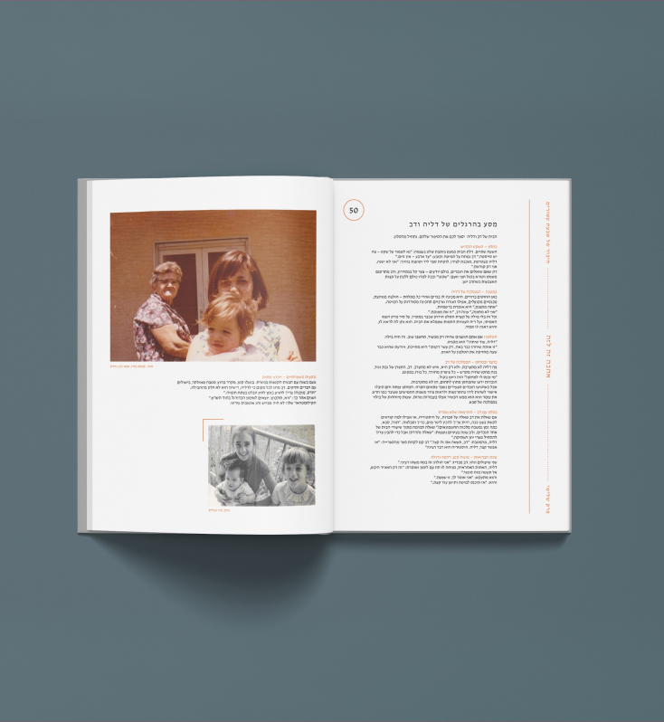

Index

Shufuni Cider
2024
Brand Identity, Art Direction, Packaging Design
Etymology of wild plants
2026
Exhibition design
Cinema South Festival 26’
2026
Visual Identity, Editorial Design, Motion

Football in Israel
2024
Editorial Design, Typography

Cards of peace
2026
Imagemaking, Typography
Consumerism Crisis
2024
Illustration, Motion Design

The Fine Print of the Pill
2026
Broadsheet Design, Complex Typography, Editorial Research
the curious incident of the dog in the night-time
2026
Title sequence, Motion design

Dalia & Dov
2025
Editorial Design, Book Design
Let's talk.